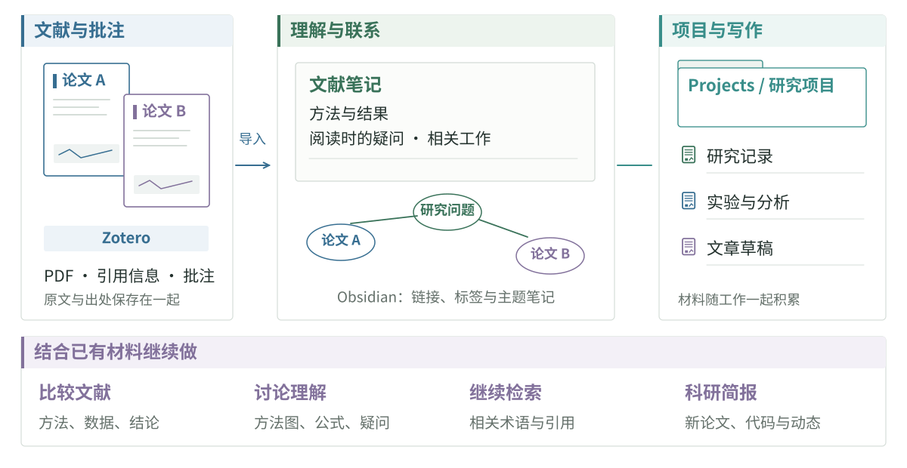

论文阅读与笔记工作流
论文、批注和研究笔记往往散在不同地方。Zotero 可以保存原文与引用信息，Obsidian 用来记录理解、疑问和工作之间的联系；把笔记目录交给本地 AI 工具，还可以继续比较文献、整理材料和写作。
这套工具配置和阅读方法来自 irene 的《一些小分享》：原文 PDF。

Zotero 与 Obsidian
在 Zotero 中保存论文信息、PDF 和批注，通过 Zotero Integration 导入 Obsidian。插件仓库有依赖、安装和模板配置说明。笔记库中的文献条目可以链接到研究问题、项目记录和其他论文。
原分享使用 Papers、Notes、Projects、Attachments、Templates 几类目录，分别保存文献笔记、日常思考、项目资料、图片与模板。apex-dashboard 可把笔记、待办和项目放在同一页。
导入的文献信息和批注可以作为笔记的起点，再补上阅读时的理解、疑问，以及它与其他工作的联系。
本地 AI 工具可以直接处理指定的笔记文件。例如：
比较这三篇论文笔记里的方法、数据和结论。每项比较附上对应论文和笔记位置，把缺少的信息列出来。
笔记模板与写作提示词
| 内容 | 记录 |
|---|---|
| 来源 | 标题、作者、年份、DOI、Zotero 条目与 PDF |
| 问题与方法 | 要解决什么，采用什么方法与数据 |
| 结果 | 关键结论和对应图表、实验位置 |
| 批注 | 疑问、判断、可能引用的内容 |
| 联系 | 相关论文、研究问题与项目 |
把这篇文献笔记整理成模板，保留已有批注和疑问。检查数学公式能否在 Obsidian 中正常显示。
根据这些笔记，围绕指定的研究问题列出文章提纲，把每段要用的证据和来源放在旁边。
研究问题与相关工作
随着阅读积累，同一个问题往往会有几种做法和解释。可以围绕正在关心的问题，把基础工作、后续改进、做过的实验和还没弄清的地方记在一起。新论文可能直接回答这个问题，也可能提供一个工具，或把两条原本分开的研究路线联系起来。
一个重要的问题，即使暂时没有得到充分回答，也值得继续追下去。 有时读到一项新工作，会想起之前某篇论文里没看懂的设计；把这些联系留在笔记里，重新阅读时就能接着当时的思考往下走。
文献比较提示词
结合论文 PDF、项目页与代码，还原研究问题与核心主张，逐项找到相关证据。消融能否区分各模块的贡献？指标是否对应作者声称的能力？请标明相关章节、图表，以及值得继续追问的地方。
用 Grill Me 讨论方法
paper-tools-marketplace 提供论文阅读工具。Grill Me 的用法是把论文讲给 AI 听，由它继续追问，再回到原文解决讨论中的疑问。
接下来会有一段对方法图的解释。每次追问一个问题，围绕输入输出、模块作用、关键假设和实验证据展开；等回答后再继续。
讲解方法图或关键公式时，这种讨论容易发现平时读过去、却没有真正想清楚的地方。
沿着问题检索
笔记中还没解决的问题，也可以成为下一次检索的起点。例如，某种现象是否在其他任务中出现过，某个方法有没有后续改进。把相关的研究对象、方法或任务名称组合起来，可以在 切问 等工具中查找，再从论文的引用和作者主页继续找相关工作。
科研简报
对于持续关注的方向，还可以用科研简报汇集近期的论文、代码、模型和实验室动态。把研究笔记和已读清单作为参考，可以减少重复推荐，也让内容更贴近正在关心的问题。
原分享用方向比重表达兴趣，例如 LLM 60%、Agent 20%、理论 10%、高校动态 10%。选题变化后，关注范围和推送频率也可以跟着调整。
简报配置与提示词示例
其他配置示例：具身智能 50%、世界模型 20%、视觉 20%、实验室动态 10%；Virtual Cell 40%、单细胞基础模型 30%、AI 基础方法 20%、高校动态 10%。
请生成一份中文科研简报。当前研究问题是［填写］，关注方向及比重是［填写］。参考所附研究笔记、最近七天的简报和已读清单。
选约五条工作，关注近期论文、模型、开源项目、benchmark、工具、会议成果和学术机会。每条附发布日期与原始来源，说明主要内容及与当前研究问题的联系。
最近七天出现过的论文和项目合并处理；有新版本、新代码或新结果时，说明新增内容。
原配置还设置了“五条中至少四条为最近七天未推荐的新主题，至少两条来自近二十四到七十二小时”的筛选条件，材料不足时将范围扩大到十四天。方向比重、条数和时间范围都可在提示词中调整。
可通过工具中的定时任务安排每日或每周汇总。简报日期、论文标题、项目链接和阅读记录保存在清单中，供下一期比较与去重。
阅读工具与插件
Scholaread 靠岸学术 提供论文阅读、翻译与笔记功能，切问 用于文献检索。Zotero Connector 可以从浏览器收集文献。原分享还介绍了在终端中通过 Claude Code 使用 DeepSeek，配置见 DeepSeek 接入说明。
编辑器与浏览器插件
| 用途 | 工具 |
|---|---|
| 编辑器语言与 Markdown | 简体中文语言包、markdownlint、Markdown Preview Enhanced with litvis |
| 拼写与格式 | Code Spell Checker、Prettier |
| 代码报错与历史 | Error Lens、GitLens |
| 数据分析 | Jupyter、Rainbow CSV |
| LaTeX | LaTeX Workshop，配合本地 TeX 环境 |
| 浏览器阅读 | AnyDoc 翻译器、LaTex Math Equations Viewer、Markdown Reader |
资料查找、分析与写作中反复使用的任务，也可以留成 skill。原分享提到的工具包括 Plan、Arxiv／Firecrawl、Jupyter，以及 Research Paper Writing、Humanizer、PowerPoint 等，具体配置见前面的原文 PDF。